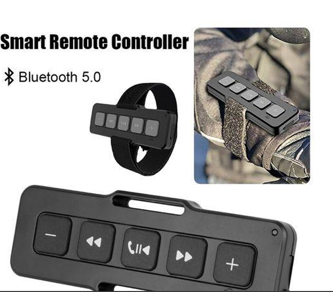

Engineered for Comfort and Versatility | Take Control Anywhere
Chubby Buttons is designed for those who crave outdoor adventure without sacrificing convenience. This cutting-edge Bluetooth remote control redefines how outdoor enthusiasts interact with their devices, allowing them to stay connected while staying active.
Built for Adventure
Chubby Buttons is waterproof, shockproof, and designed to withstand the elements. Its large, glove-friendly buttons let you control your devices without removing your gloves—perfect for cold weather or extreme activities.
"I no longer have to stop, take off my gloves, and fumble with my phone just to change a song or answer a call," said one happy customer.
Why Chubby Buttons Stands Out
Chubby Buttons excels with its ergonomic design and intuitive interface. The large buttons allow users to easily control their music, volume, and calls without needing to pull out their phones.
Versatility for Any Environment
Chubby Buttons is not just for winter sports—it’s perfect for hiking, cycling, or water sports. Its waterproof and durable design can handle any environment, ensuring you can control your devices no matter where you are.
Designed for Durability and Comfort
Chubby Buttons is engineered to endure rugged use. Its shockproof casing ensures it can withstand the inevitable drops and bumps that come with outdoor sports, making it the perfect companion for any adventure.
Seamless Connectivity
Chubby Buttons pairs easily with most Bluetooth-enabled devices, providing reliable and lag-free connectivity for a smooth experience throughout your adventures.
User Testimonials
"Chubby Buttons makes my outdoor runs easier and more enjoyable. I no longer struggle to find my phone in my pocket while wearing gloves!" shared a long-distance runner.
"Chubby Buttons is an extension of my phone that I can operate even with ski gloves on. It’s made my ski trips safer and more efficient." — A skier
How to Use Chubby Buttons
Using Chubby Buttons is simple: attach it to your jacket, bike, or backpack. Press to control music, double-press to skip tracks, or hold to adjust the volume. It’s intuitive, even with gloves on!
The Perfect Companion for Outdoor Enthusiasts
For those who love adventure, Chubby Buttons is the ideal solution to stay connected without sacrificing your activity. Enjoy seamless control of your music and calls, even in the harshest conditions.
Final Thoughts
Chubby Buttons combines durability, convenience, and ease of use into one compact device. Whether you're skiing, hiking, or cycling, it enhances your experience by keeping you connected without interrupting your flow.